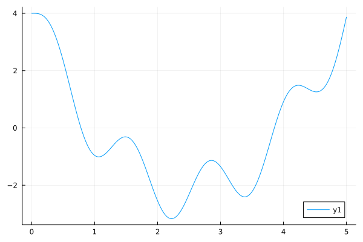

Week 14 Lab: ArbExtras.jl
Due to travel, there is no in-class meeting for this lab. These notes are therefore intended to be read outside of class.
The goal of this lab is to familiarize yourself a little bit with the Julia package ArbExtras.jl. From the README of the package we have
This package extends Arblib with some methods for enclosing roots, enclosing extrema and computing integrals.
The package started development during my PhD with the goal to give reusable implementations of algorithms that were used in my research. The type of methods that are implemented and which type of input they are optimized for has been heavily influenced by the projects that I worked on during that time.
There is no separate documentation for this package, so instead take some time to read through the README. The functions we will take a look at during this lab are:
isolate_roots(f, a::Arf, b::Arf): Used for isolating all roots of
a function $f$ on the interval $[a, b]$.
refine_root(f, root::Arb): Used to refine an already existing
enclosure $root$ of a function function $f$.
extrema_enclosure(f, a::Arf, b::Arf): Used for enclosing the
extrema of a function $f$ on an interval $[a, b]$.
The first two are closely related to what we talked about during Week 7, in particular Lecture 2.
Isolating roots
In Week 7 Lecture 2 we looked at isolating the roots of the function $f(x) = \sin(5x) - 5x + x^2 + 4$. We will redo that with the isolate_roots function from ArbExtras. Let us start by loading the required packages and defining the function.
using Arblib, ArbExtras, Plots
setprecision(Arb, 128)
f(x) = sin(5x) - 5x + x^2 + 4f (generic function with 1 method)Plotting the function, we have
plot!(range(0, 5, 1000), f)
We can isolate all the roots of this function on the interval $[0, 5]$ with
roots, flags = ArbExtras.isolate_roots(f, Arf(0), Arf(5))(Tuple{Arblib.Arf, Arblib.Arf}[(0.625, 0.9375), (3.75, 4.0625)], Bool[1, 1])TASKS:
- Read the documentation of
ArbExtras.isolate_roots(you can access the documentation by typing?in the Julia REPL and writingArbExtras.isolate_roots). - What do the return values
rootsandflagsmean? - How many functions does $f$ have on the interval $[0, 5]$?
- Run the function with
verbose = true, i.e.roots, flags = ArbExtras.isolate_roots(f, Arf(0), Arf(5), verbose = true). What output do you see?
You can experiment with other functions and intervals. For example you can look at:
- What happens if there is a zero on the boundary? For example for $f(x) = 2 - x + \sin(\pi x)$ on the interval $[0, 2]$. What happens if you extend the interval to $[0, 3]$?
- What happens for double roots? For example $f(x) = x^2$ on the interval $[-1, 2]$.
Refine roots
In Week 7 Lecture 2 we also looked at refining roots of functions. Among other things we talked about the interval Newton method. The refine_root function implements this method.
Let us consider the function $g(x) = e^x - 4x$, which has a root on the interval $[0, 1]$. We can refine this root with
g(x) = exp(x) - 4x
ArbExtras.refine_root(x -> exp(x) - 4x, Arb((0, 1)))[0.35740295618138890306881110405590475332 +/- 9.26e-39]TASKS:
- Read the documentation of
ArbExtras.refine_root. - Run the function with
verbose = true, i.e.ArbExtras.refine_root(x -> exp(x) - 4x, Arb((0, 1))). What output do you see? - Run the function with the input interval $[-1, 0]$ (where there is not root). What happens?
- If you increase the precision using
setprecision(Arb, P)for someP(say 1024), how does the enclosure change? What does theverbose = trueoutput look like?
Enclose extrema
The function ArbExtras.extrema_enclosure can be used to enclose the extrema of a function on an interval. Let us consider the function $h(x) = x\sin(x) + x\cos(2x)$ on the interval $[0, 10]$. We can enclose the extrema with
h(x) = x * sin(x) + x * cos(2x)
ArbExtras.extrema_enclosure(h, Arf(0), Arf(10))([-9.50835044063309514253 +/- 5.97e-21], [10.3367982489424558454 +/- 4.93e-20])TASKS:
- Read the documentation of
ArbExtras.extrema_enclosure(it is quite long). - Run the function with
verbose = true. What output do you see? - Add the argument
rtol = 1e-5. How does the result change? If you also run it withverbose = true, how does the output change? - Change the function to
maximum_enclosureandminimum_enclosure. How do these differ? - Run the
maximum_enclosurefunction with the argumentubound_tol = 20. What do you get? This can be useful if you only need to prove that the function is bounded by some value, but don't need to get a tight enclosure of the maximum.